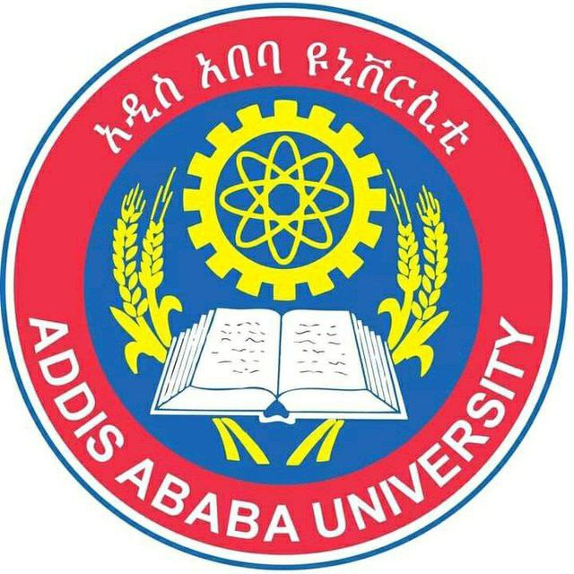

Education
I completed my high school education at Kotebe University of Education Science Shared Campus Menelik 1, also known as KUESSC. This isn't your typical school; it's designed for specially selected, high-achieving students who excelled in their primary leaving examinations. The school offers a four-year scholarship to students pursuing natural studies, and I was fortunate to be among those selected.During my time at KUESSC, I dedicated four years to my studies, ultimately graduating with an impressive GPA of 3.92/4.00 and a secondary school leaving examination score of 599/600. This school became a second home to me, with teachers who became mentors and classmates who turned into lifelong friends.The experience at KUESSC was transformative, providing numerous opportunities for personal and academic growth. I firmly believe that attending this school played a significant role in shaping me into the person I am today, continually striving to improve and succeed.

As of today, I've been attending one of the most prestigious universities in Ethiopia and Africa as a whole, Addis Ababa University (AAU). Known for its rigorous curriculums and exceptional lecturers, I joined this esteemed institution in 2022 and am currently part of the SiTE department. I am confident that AAU will help me achieve my career goals, given its outstanding reputation for dedication to education, research, and community involvement. The university offers a vast array of undergraduate and postgraduate programs across various fields, including natural sciences, engineering, humanities, social sciences, and health sciences. AAU is committed to advancing knowledge, fostering innovation, and contributing significantly to the development of Ethiopia and beyond. This commitment reassures me that my time here will be instrumental in shaping my future success.
